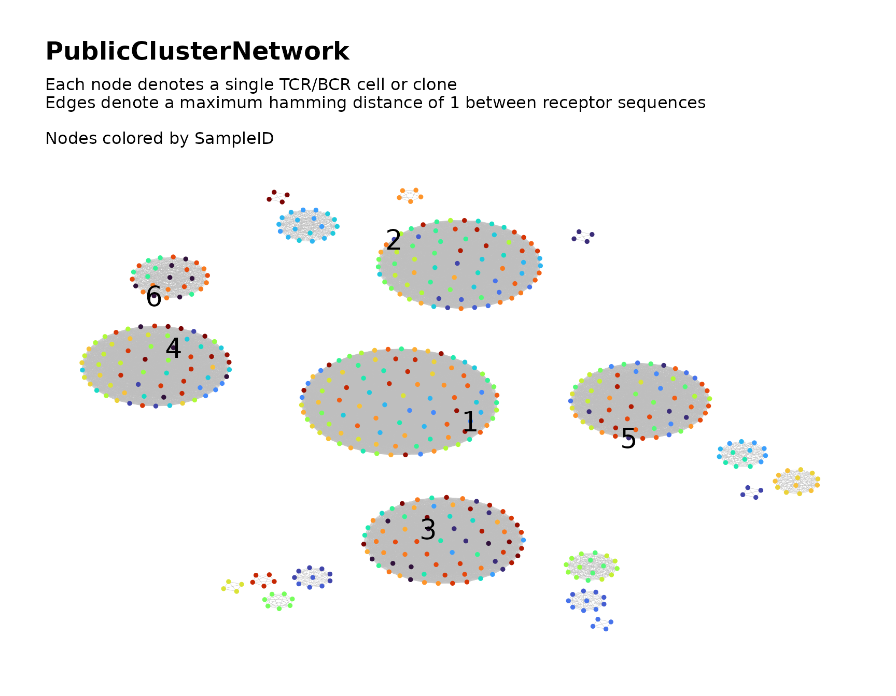

Searching for Public TCR/BCR Clusters
public_clusters.RmdIntroduction
The NAIR package includes a set of functions that
facilitate searching for public TCR/BCR clusters across multiple samples
of Adaptive Immune Receptor Repertoire Sequencing (AIRR-Seq) data.
In this context, a public cluster consists of similar TCR/BCR clones (e.g., those whose CDR3 amino acid sequences differ by at most one amino acid) that are shared across samples (e.g., across individuals or across time points for a single individual).
We first provide a brief conceptual overview, followed by a demonstration in which we explain the process in greater detail.
Overview of Process
- Filter the clusters within each sample’s network. For each sample, construct the repertoire network and use cluster analysis to partition the nodes into clusters. Filter the data, keeping only those clusters with sufficient node count or clone count.
- Construct global network from the filtered data and perform clustering. Combine the filtered data from all samples into a single global network. Perform cluster analysis and assign membership to the global clusters. Assess sample representation within the clusters to identify public clusters.
Simulate Data for Demonstration
We simulate some toy data for demonstration.
We simulate a total of 30 samples, each containing 30 observations.
Some sequences are simulated with a tendency to appear in relatively few samples, while others are simulated with a tendency to appear in many samples.
Each sample is saved in a separate file using the .rds file format.
The files are named “Sample1.rds”,
“Sample2.rds”, etc. The file path of their directory is
saved to the R environment variable dir_input_samples for
later reference.
# Use temp dir
data_dir <- tempdir()
# Directory to store input files
dir_input_samples <- file.path(data_dir, "input_samples")
dir.create(dir_input_samples, showWarnings = FALSE)
samples <- 30
sample_size <- 30 # (seqs per sample)
base_seqs <- c(
"CASSIEGQLSTDTQYF", "CASSEEGQLSTDTQYF", "CASSSVETQYF",
"CASSPEGQLSTDTQYF", "RASSLAGNTEAFF", "CASSHRGTDTQYF", "CASDAGVFQPQHF",
"CASSLTSGYNEQFF", "CASSETGYNEQFF", "CASSLTGGNEQFF", "CASSYLTGYNEQFF",
"CASSLTGNEQFF", "CASSLNGYNEQFF", "CASSFPWDGYGYTF", "CASTLARQGGELFF",
"CASTLSRQGGELFF", "CSVELLPTGPLETSYNEQFF", "CSVELLPTGPSETSYNEQFF",
"CVELLPTGPSETSYNEQFF", "CASLAGGRTQETQYF", "CASRLAGGRTQETQYF",
"CASSLAGGRTETQYF", "CASSLAGGRTQETQYF", "CASSRLAGGRTQETQYF",
"CASQYGGGNQPQHF", "CASSLGGGNQPQHF", "CASSNGGGNQPQHF", "CASSYGGGGNQPQHF",
"CASSYGGGQPQHF", "CASSYKGGNQPQHF", "CASSYTGGGNQPQHF",
"CAWSSQETQYF", "CASSSPETQYF", "CASSGAYEQYF", "CSVDLGKGNNEQFF")
# relative generation probabilities
pgen <- cbind(
stats::toeplitz(0.6^(0:(sample_size - 1))),
matrix(1, nrow = samples, ncol = length(base_seqs) - samples))
# Simulate the data
library(NAIR)
foo <- simulateToyData(
samples = samples, sample_size = sample_size,
prefix_length = 1, prefix_chars = c("", ""),
prefix_probs = cbind(rep(1, samples), rep(0, samples)),
affixes = base_seqs, affix_probs = pgen, num_edits = 0,
output_dir = dir_input_samples, no_return = FALSE)The first few rows of the data for the first sample appear as follows:
# View first few rows of data for sample 1
head(readRDS(file.path(dir_input_samples, "Sample1.rds")))
#> CloneSeq CloneFrequency CloneCount SampleID
#> 1 CASSIEGQLSTDTQYF 0.02606559 2832 Sample1
#> 2 CASSEEGQLSTDTQYF 0.03718396 4040 Sample1
#> 3 CASSSPETQYF 0.03182726 3458 Sample1
#> 4 CASSIEGQLSTDTQYF 0.04615781 5015 Sample1
#> 5 CAWSSQETQYF 0.06006498 6526 Sample1
#> 6 CASSEEGQLSTDTQYF 0.03363123 3654 Sample1Step 1: Filter Clusters Within Each Sample
First, we use the findPublicClusters function to perform
network analysis on each sample individually and select clusters based
on node count and clone count.
For each sample, the repertoire network is constructed and cluster analysis is used to partition the network into clusters. The clusters are then filtered according to node count and clone count based on user-specified criteria. The node-level and cluster-level metadata for the clusters that remain after filtering are saved as files to be used as inputs for step 2.
Below, we explain the function’s usage.
Filter Settings
The findPublicClusters function has several parameters
that control the criteria used to filter the nodes and clusters in each
sample. These arguments are presented below.
Top \(n\) Clusters
Within each sample, the clusters are ranked by node count. The top
\(n\) highest-ranking clusters (those
with the greatest node count) within each sample are automatically
retained. The default value of \(n\) is
20. A different value of \(n\) can be
specified using the top_n_clusters argument.
If more than one cluster is tied for \(n\)-th place in the ranking by node count, only one such cluster will be included in the top \(n\) clusters. This ensures that no more than \(n\) clusters are selected from each sample based on this criterion.
If fewer than \(n\) clusters are present in the network for a sample, then all of the clusters will be retained.
Minimum Node Count
In addition to retaining the top \(n\) clusters from each sample, clusters
that contain a sufficient number of nodes will also be retained. By
default, any cluster containing at least ten nodes will be retained.
This value can be adjusted using the min_node_count
argument. For example, setting min_clone_count = 30 will
retain all clusters containing at least 30 nodes.
Minimum Clone Count
In addition to the clusters retained based on node count, clusters with a sufficient aggregate clone count will also be retained. The aggregate clone count of a cluster is the sum of the clone counts across all nodes (clones) in the cluster.
By default, any cluster with an aggregate clone count of at least 100
will be retained. This value can be adjusted using the
min_clone_count argument. For example, setting
min_clone_count = 500 will retain all clusters with an
aggregate clone count of at least 500.
Note that clusters are only selected according to this criterion if
clone counts are provided. This is done using the count_col
argument as explained in the Specifying the Count
Column subsection.
Sequence Length
When building the network for each sample, only clones whose receptor
sequences are at least three characters in length will be included in
the network. This minimum value for sequence length can be adjusted by
setting the min_seq_length argument to a different value.
Setting the value to NULL bypasses this check.
Sequence Content
When building the network for each sample, all clones whose receptor
sequences contain characters * or _ will be
omitted from the network. This can be changed using the
drop_matches argument, which accommodates a character
string or regular expression specifying the pattern of content to search
for. The content of each clone’s sequence is checked for a match to this
pattern using the grep function from base R. If a match is
found, the clone is omitted from the network. Setting the value to
NULL bypasses this check.
For details on how the pattern matching is performed, please refer to
the base R documentation files for regex and
grep.
Input File Paths
The main argument of the findPublicClusters function is
the file_list argument, which accepts a vector containing
file paths. Each path corresponds to a distinct AIRR-Seq data file
representing an individual sample.
Below, we prepare the vector input_files to be provided
to the file_list argument of
findPublicClusters:
# input files for step 1 (one per sample)
input_files <- file.path(dir_input_samples, paste0("Sample", 1:samples, ".rds"))
head(input_files)
#> [1] "/tmp/Rtmp4keLMW/input_samples/Sample1.rds"
#> [2] "/tmp/Rtmp4keLMW/input_samples/Sample2.rds"
#> [3] "/tmp/Rtmp4keLMW/input_samples/Sample3.rds"
#> [4] "/tmp/Rtmp4keLMW/input_samples/Sample4.rds"
#> [5] "/tmp/Rtmp4keLMW/input_samples/Sample5.rds"
#> [6] "/tmp/Rtmp4keLMW/input_samples/Sample6.rds"Input File Format
The file format of the input files for
findPublicClusters is specified using the
input_type parameter. The supported formats include
"rds", "rda", "csv", as well as
files that can be read using the read.table function, such
as "tsv" and "txt".
For text formats such as "csv", "tsv" and
"txt", users can specify the separation option by utilizing
the sep argument. The default setting sep = ""
accommodates all forms of white space, i.e., one or more spaces, tabs,
newlines or carriage returns. In addition, it is important to note that
the first line of the data is assumed to be the header by default. To
disable this behavior and treat the first line as data, users must set
the header parameter to FALSE.
For the "rda" (Rdata) format, the
data_symbols argument is used to specify the name of each
sample’s AIRR-Seq data frame within the Rdata file (i.e., the name of
the data frame as it will appear in the R environment when the Rdata
file is loaded). The argument accepts a character string. This requires
that each sample’s data frame has the same name within its respective
Rdata file. For example, if each sample’s data frame is named
mydataframe and saved using the command
save(mydataframe, file = myfilepath), where the file path
myfilepath is different for each sample, then we would set
data_symbols = "mydataframe".
Our samples are stored in .rds files, so we use
input_type = "rds".
Specifying the Sequence Column
Each clone’s TCR/BCR sequence is used as the basis of similarity between clones in the network.
The seq_col argument is used to specify the column
containing the clone sequences in the input data for each sample. The
argument accepts either the column name or column index.
In our simulated data, the column containing the clone sequences is
named CloneSeq.
Specifying the Count Column
The clone count for each clone is used to filter the clusters within each sample.
The count_col argument is used to specify the column
containing the clone counts in the input data for each sample. The
argument accepts either the column name or column index.
In our simulated data, the column containing the clone sequences is
named CloneCount.
Assigning Custom Sample IDs
The sample ID for each clone will be included in the filtered data
saved by findPublicClusters. This will allow us to
distinguish the sample of origin for each clone after we combine the
filtered data from all samples in step 2.
By default, the samples are labeled numerically according to the
order they appear in file_list. The sample_ids
argument allows for custom sample IDs to be assigned, if desired. The
argument accepts a vector of the same length as file_list.
Each entry of sample_ids is assigned as a sample ID to the
sample in the corresponding entry of file_list.
Network Settings Per Sample
The settings used to construct the network for each sample can be customized using the arguments below.
Distance Function
The default method for measuring the similarity between TCR/BCR sequences is the Hamming distance. It calculates the number of differences between two sequences of the same length. If the sequences have different lengths, the shorter sequence is extended by adding non-matching characters to make it the same length as the longer sequence.
The Levenshtein distance can be used as an alternative measurement to
determine the similarity between sequences. It calculates the minimum
number of single-character edits (insertions, deletions and
transformations) needed to transform one sequence into the other. This
method is particularly useful for comparing sequences of different
lengths and can account for insertions and deletions. When constructing
a network based on the similarity of CDR-3 nucleotide sequences, it is
preferable to use the Levenshtein distance instead of the default
Hamming distance by setting the argument
dist_type = "levenshtein". However, the Levenshtein
distance requires significantly more computational time than the Hamming
distance, which may be challenging when working with large data sets
having long TCR/BCR sequences.
Distance Cutoff
The distance function specified in the dist_type
argument (Hamming distance by default) is used to quantify the
similarity between TCR/BCR sequences. The chosen distance measurement
determines the distance between two nodes in the network graph.
By default, two nodes in the graph are connected by an edge if their
distance is at most 1. However, if users want to adjust this cutoff, the
dist_cutoff argument can be set to a different value.
For example, if dist_cutoff = 2, then two nodes will be
connected by an edge if their distance is at most 2. The cutoff value
controls the stringency of the network construction and affects the
number and density of edges in the network.
Keep/Remove Isolated Nodes
By default, if a given node has no edges connecting it to any other nodes in the network, it will be removed from the network graph and will not be included in the output.
If desired, all nodes can be kept in the network, including those
that do not have any edge connections to other nodes. This is
accomplished by setting the drop_isolated_nodes argument to
FALSE.
Clustering Algorithm
By default, clustering is performed using the
cluster_fast_greedy algorithm from the igraph
package. Other clustering algorithms from the igraph
package can be used instead of the default algorithm. The algorithm is
specified using the cluster_fun argument, which accepts one
of the following functions:
cluster_fast_greedycluster_edge_betweennesscluster_fluid_communitiescluster_infomapcluster_label_propcluster_leading_eigencluster_leidencluster_louvaincluster_optimalcluster_spinglasscluster_walktrap
For example, setting cluster_fun = cluster_leiden
performs clustering using the cluster_leiden algorithm.
For more information about a particular algorithm, users can refer to
its help documentation file. For example, the command
?igraph::cluster_fast_greedy loads the documentation file
for the cluster_fast_greedy algorithm.
Output Settings
The findPublicClusters function does not return any
direct output. Instead, it saves the network metadata for the selected
clusters to files that will be used as inputs in step 2.
For each sample, findPublicClusters saves two files, one
containing the node-specific network metadata and the other containing
the cluster-specific network metadata. The data for each sample is saved
after filtering the clusters, and thus includes only the clusters
selected based on the specified filter settings.
Subsetting Columns From the Input Data
The node-specific network metadata for each sample includes all of the data columns that were present in the sample’s original input data frame.
In some cases, the user may not wish for all columns to be included.
In this case, the user can specify the columns to be included using the
subset_cols argument, which accepts a vector containing
either the column names or the column indices of the columns to be
kept.
The column specified by the seq_col argument will
automatically be included regardless of the value of
subset_cols.
Output Directory
The file path for the output directory is specified using the
output_dir argument. The output directory specified by the
output_dir argument will be created if it does not already
exist.
Within the output directory, two subdirectories are created. One
subdirectory, named node_meta_data, contains the node-level
data files for each sample, and the other, named
cluster_meta_data, contains the cluster-level data files.
Within each of these two subdirectories, the file for each sample is
named according to its sample ID as specified by the
sample_ids argument (see the Assigning Custom
Sample IDs subsection above).
Output File Format
By default, each file is saved as a RDS file. This can be changed
using the output_type argument. Other valid options include
"rda" and "csv". For the "rda"
(Rdata) format, each data frame containing node-level data will be named
ndat in the R environment when its Rdata file is loaded,
while each data frame containing cluster-level data will be named
cdat.
Saving Unfiltered Network Data
By default, the findPublicClusters function saves the
network metadata only for the clusters selected based on the specified
filter settings.
If desired, the network metadata for each sample’s full network can
also be saved prior to filtering the clusters. This is done by by
providing a file path to the output_dir_unfiltered
argument, which specifies a separate output directory for the full
network data. Each sample’s full network data prior to filtering the
clusters will then be saved to the directory specified by the
output_dir_unfiltered argument. This data is saved
separately from, and in addition to, the default data that is saved
after filtering the clusters.
Note that the sequence-based filter settings specified by
min_seq_length and drop_chars still apply to
each sample’s full network, since the network is only constructed after
applying these filters. The full, pre-filtered network refers to the
network that contains all of the sample’s clusters, i.e., before the
public clusters are identified and other clusters are removed.
The full network data for each sample includes node-level metadata,
cluster-level metadata, the igraph edge list, the network
adjacency matrix, as well as any plots generated (see next subsection).
By default, the R objects for these files are saved into a single RDS
file whose file name (excluding the .rds file extension) is the sample
ID (as specified by the sample_ids argument). The RDA file
format can be used instead of RDS by setting
output_type_unfiltered = "rda". If desired, each R object
can be saved to a separate file by setting
output_type_unfiltered = "individual". This saves each
object according to the default file format used
by buildRepSeqNetwork. When saving objects
individually, the sample ID is used as the common file name prefix for
the files from each sample.
(Optional) Network Visualization Per Sample
By default, findPublicClusters does not produce visual
plots when constructing the network for each sample. Instead,
visualization occurs after combining the data from all samples into a
single network in step 2.
If desired, visual plots of the full network for each sample (prior
to filtering the clusters) can be produced by setting
plots = TRUE. The plots can be printed in R by additionally
setting print_plots = TRUE. Furthermore, if the user has
specified to save the full network data for each sample (prior to
filtering the clusters) by providing a file path to the
output_type_unfiltered argument, these plots will be saved
along with the rest of the full network data for each sample.
Note that the plots are not saved along with the default data that is
saved after filtering the clusters. Therefore, if no file path is
provided to the output_type_unfiltered argument, the plots
will not be saved at all. If, in addition, the argument
print_plots is set to FALSE (the default),
setting plots = TRUE will have no effect.
If the user sets plots to TRUE, then by
default, the plot for each sample will color the nodes according to
their cluster membership. If desired, a different variable can be used
to color the nodes. This is done by specifying the column for the
variable to the color_nodes_by argument, which accepts a
column name or column index.
This vignette details additional arguments that can be used to further customize the visual plot for each sample.
Example Function Call
We execute the findPublicClusters function using the
input we prepared earlier for the file_list argument.
The file path of our output directory is saved to the R variable
named dir_filtered_samples for later reference.
# 1. Filter Clusters Within Each Sample
dir_filtered_samples <- file.path(data_dir, "filtered_samples")
findPublicClusters(
file_list = input_files, input_type = "rds",
sample_ids = paste0("Sample", 1:samples),
seq_col = "CloneSeq", count_col = "CloneCount",
min_seq_length = NULL, drop_matches = NULL,
top_n_clusters = 3, min_node_count = 5, min_clone_count = 15000,
output_dir = dir_filtered_samples)
#> <<< Beginning search for public clusters >>>
#> Processing sample 1 of 30: Sample1
#> Input data contains 30 rows.
#> Computing network edges based on a max hamming distance of 1... Done.
#> Network contains 30 nodes (after removing isolated nodes).
#> Computing cluster membership within the network... Done.
#> Computing node-level network statistics... Done.
#> Computing statistics for the 7 clusters in the network... Done.
#> >>> Filtering clusters in the current sample... Done.
#> * 3 clusters (18 nodes) remain. Saving results... Done.
#> ----------------------------------------------------------------------
#> Processing sample 2 of 30: Sample2
#> Input data contains 30 rows.
#> Computing network edges based on a max hamming distance of 1... Done.
#> Network contains 28 nodes (after removing isolated nodes).
#> Computing cluster membership within the network... Done.
#> Computing node-level network statistics... Done.
#> Computing statistics for the 6 clusters in the network... Done.
#> >>> Filtering clusters in the current sample... Done.
#> * 4 clusters (22 nodes) remain. Saving results... Done.
#> ----------------------------------------------------------------------
#> Processing sample 3 of 30: Sample3
#> Input data contains 30 rows.
#> Computing network edges based on a max hamming distance of 1... Done.
#> Network contains 29 nodes (after removing isolated nodes).
#> Computing cluster membership within the network... Done.
#> Computing node-level network statistics... Done.
#> Computing statistics for the 6 clusters in the network... Done.
#> >>> Filtering clusters in the current sample... Done.
#> * 3 clusters (20 nodes) remain. Saving results... Done.
#> ----------------------------------------------------------------------
#> Processing sample 4 of 30: Sample4
#> Input data contains 30 rows.
#> Computing network edges based on a max hamming distance of 1... Done.
#> Network contains 28 nodes (after removing isolated nodes).
#> Computing cluster membership within the network... Done.
#> Computing node-level network statistics... Done.
#> Computing statistics for the 6 clusters in the network... Done.
#> >>> Filtering clusters in the current sample... Done.
#> * 3 clusters (18 nodes) remain. Saving results... Done.
#> ----------------------------------------------------------------------
#> Processing sample 5 of 30: Sample5
#> Input data contains 30 rows.
#> Computing network edges based on a max hamming distance of 1... Done.
#> Network contains 27 nodes (after removing isolated nodes).
#> Computing cluster membership within the network... Done.
#> Computing node-level network statistics... Done.
#> Computing statistics for the 6 clusters in the network... Done.
#> >>> Filtering clusters in the current sample... Done.
#> * 4 clusters (22 nodes) remain. Saving results... Done.
#> ----------------------------------------------------------------------
#> Processing sample 6 of 30: Sample6
#> Input data contains 30 rows.
#> Computing network edges based on a max hamming distance of 1... Done.
#> Network contains 29 nodes (after removing isolated nodes).
#> Computing cluster membership within the network... Done.
#> Computing node-level network statistics... Done.
#> Computing statistics for the 9 clusters in the network... Done.
#> >>> Filtering clusters in the current sample... Done.
#> * 3 clusters (15 nodes) remain. Saving results... Done.
#> ----------------------------------------------------------------------
#> Processing sample 7 of 30: Sample7
#> Input data contains 30 rows.
#> Computing network edges based on a max hamming distance of 1... Done.
#> Network contains 26 nodes (after removing isolated nodes).
#> Computing cluster membership within the network... Done.
#> Computing node-level network statistics... Done.
#> Computing statistics for the 8 clusters in the network... Done.
#> >>> Filtering clusters in the current sample... Done.
#> * 3 clusters (13 nodes) remain. Saving results... Done.
#> ----------------------------------------------------------------------
#> Processing sample 8 of 30: Sample8
#> Input data contains 30 rows.
#> Computing network edges based on a max hamming distance of 1... Done.
#> Network contains 26 nodes (after removing isolated nodes).
#> Computing cluster membership within the network... Done.
#> Computing node-level network statistics... Done.
#> Computing statistics for the 9 clusters in the network... Done.
#> >>> Filtering clusters in the current sample... Done.
#> * 3 clusters (12 nodes) remain. Saving results... Done.
#> ----------------------------------------------------------------------
#> Processing sample 9 of 30: Sample9
#> Input data contains 30 rows.
#> Computing network edges based on a max hamming distance of 1... Done.
#> Network contains 26 nodes (after removing isolated nodes).
#> Computing cluster membership within the network... Done.
#> Computing node-level network statistics... Done.
#> Computing statistics for the 8 clusters in the network... Done.
#> >>> Filtering clusters in the current sample... Done.
#> * 3 clusters (13 nodes) remain. Saving results... Done.
#> ----------------------------------------------------------------------
#> Processing sample 10 of 30: Sample10
#> Input data contains 30 rows.
#> Computing network edges based on a max hamming distance of 1... Done.
#> Network contains 28 nodes (after removing isolated nodes).
#> Computing cluster membership within the network... Done.
#> Computing node-level network statistics... Done.
#> Computing statistics for the 9 clusters in the network... Done.
#> >>> Filtering clusters in the current sample... Done.
#> * 3 clusters (15 nodes) remain. Saving results... Done.
#> ----------------------------------------------------------------------
#> Processing sample 11 of 30: Sample11
#> Input data contains 30 rows.
#> Computing network edges based on a max hamming distance of 1... Done.
#> Network contains 26 nodes (after removing isolated nodes).
#> Computing cluster membership within the network... Done.
#> Computing node-level network statistics... Done.
#> Computing statistics for the 8 clusters in the network... Done.
#> >>> Filtering clusters in the current sample... Done.
#> * 4 clusters (18 nodes) remain. Saving results... Done.
#> ----------------------------------------------------------------------
#> Processing sample 12 of 30: Sample12
#> Input data contains 30 rows.
#> Computing network edges based on a max hamming distance of 1... Done.
#> Network contains 29 nodes (after removing isolated nodes).
#> Computing cluster membership within the network... Done.
#> Computing node-level network statistics... Done.
#> Computing statistics for the 10 clusters in the network... Done.
#> >>> Filtering clusters in the current sample... Done.
#> * 3 clusters (12 nodes) remain. Saving results... Done.
#> ----------------------------------------------------------------------
#> Processing sample 13 of 30: Sample13
#> Input data contains 30 rows.
#> Computing network edges based on a max hamming distance of 1... Done.
#> Network contains 27 nodes (after removing isolated nodes).
#> Computing cluster membership within the network... Done.
#> Computing node-level network statistics... Done.
#> Computing statistics for the 8 clusters in the network... Done.
#> >>> Filtering clusters in the current sample... Done.
#> * 4 clusters (18 nodes) remain. Saving results... Done.
#> ----------------------------------------------------------------------
#> Processing sample 14 of 30: Sample14
#> Input data contains 30 rows.
#> Computing network edges based on a max hamming distance of 1... Done.
#> Network contains 26 nodes (after removing isolated nodes).
#> Computing cluster membership within the network... Done.
#> Computing node-level network statistics... Done.
#> Computing statistics for the 7 clusters in the network... Done.
#> >>> Filtering clusters in the current sample... Done.
#> * 3 clusters (17 nodes) remain. Saving results... Done.
#> ----------------------------------------------------------------------
#> Processing sample 15 of 30: Sample15
#> Input data contains 30 rows.
#> Computing network edges based on a max hamming distance of 1... Done.
#> Network contains 29 nodes (after removing isolated nodes).
#> Computing cluster membership within the network... Done.
#> Computing node-level network statistics... Done.
#> Computing statistics for the 8 clusters in the network... Done.
#> >>> Filtering clusters in the current sample... Done.
#> * 3 clusters (14 nodes) remain. Saving results... Done.
#> ----------------------------------------------------------------------
#> Processing sample 16 of 30: Sample16
#> Input data contains 30 rows.
#> Computing network edges based on a max hamming distance of 1... Done.
#> Network contains 26 nodes (after removing isolated nodes).
#> Computing cluster membership within the network... Done.
#> Computing node-level network statistics... Done.
#> Computing statistics for the 6 clusters in the network... Done.
#> >>> Filtering clusters in the current sample... Done.
#> * 4 clusters (21 nodes) remain. Saving results... Done.
#> ----------------------------------------------------------------------
#> Processing sample 17 of 30: Sample17
#> Input data contains 30 rows.
#> Computing network edges based on a max hamming distance of 1... Done.
#> Network contains 29 nodes (after removing isolated nodes).
#> Computing cluster membership within the network... Done.
#> Computing node-level network statistics... Done.
#> Computing statistics for the 7 clusters in the network... Done.
#> >>> Filtering clusters in the current sample... Done.
#> * 4 clusters (22 nodes) remain. Saving results... Done.
#> ----------------------------------------------------------------------
#> Processing sample 18 of 30: Sample18
#> Input data contains 30 rows.
#> Computing network edges based on a max hamming distance of 1... Done.
#> Network contains 28 nodes (after removing isolated nodes).
#> Computing cluster membership within the network... Done.
#> Computing node-level network statistics... Done.
#> Computing statistics for the 9 clusters in the network... Done.
#> >>> Filtering clusters in the current sample... Done.
#> * 3 clusters (14 nodes) remain. Saving results... Done.
#> ----------------------------------------------------------------------
#> Processing sample 19 of 30: Sample19
#> Input data contains 30 rows.
#> Computing network edges based on a max hamming distance of 1... Done.
#> Network contains 28 nodes (after removing isolated nodes).
#> Computing cluster membership within the network... Done.
#> Computing node-level network statistics... Done.
#> Computing statistics for the 8 clusters in the network... Done.
#> >>> Filtering clusters in the current sample... Done.
#> * 3 clusters (17 nodes) remain. Saving results... Done.
#> ----------------------------------------------------------------------
#> Processing sample 20 of 30: Sample20
#> Input data contains 30 rows.
#> Computing network edges based on a max hamming distance of 1... Done.
#> Network contains 26 nodes (after removing isolated nodes).
#> Computing cluster membership within the network... Done.
#> Computing node-level network statistics... Done.
#> Computing statistics for the 8 clusters in the network... Done.
#> >>> Filtering clusters in the current sample... Done.
#> * 3 clusters (15 nodes) remain. Saving results... Done.
#> ----------------------------------------------------------------------
#> Processing sample 21 of 30: Sample21
#> Input data contains 30 rows.
#> Computing network edges based on a max hamming distance of 1... Done.
#> Network contains 28 nodes (after removing isolated nodes).
#> Computing cluster membership within the network... Done.
#> Computing node-level network statistics... Done.
#> Computing statistics for the 8 clusters in the network... Done.
#> >>> Filtering clusters in the current sample... Done.
#> * 4 clusters (19 nodes) remain. Saving results... Done.
#> ----------------------------------------------------------------------
#> Processing sample 22 of 30: Sample22
#> Input data contains 30 rows.
#> Computing network edges based on a max hamming distance of 1... Done.
#> Network contains 28 nodes (after removing isolated nodes).
#> Computing cluster membership within the network... Done.
#> Computing node-level network statistics... Done.
#> Computing statistics for the 8 clusters in the network... Done.
#> >>> Filtering clusters in the current sample... Done.
#> * 3 clusters (16 nodes) remain. Saving results... Done.
#> ----------------------------------------------------------------------
#> Processing sample 23 of 30: Sample23
#> Input data contains 30 rows.
#> Computing network edges based on a max hamming distance of 1... Done.
#> Network contains 27 nodes (after removing isolated nodes).
#> Computing cluster membership within the network... Done.
#> Computing node-level network statistics... Done.
#> Computing statistics for the 7 clusters in the network... Done.
#> >>> Filtering clusters in the current sample... Done.
#> * 4 clusters (19 nodes) remain. Saving results... Done.
#> ----------------------------------------------------------------------
#> Processing sample 24 of 30: Sample24
#> Input data contains 30 rows.
#> Computing network edges based on a max hamming distance of 1... Done.
#> Network contains 27 nodes (after removing isolated nodes).
#> Computing cluster membership within the network... Done.
#> Computing node-level network statistics... Done.
#> Computing statistics for the 8 clusters in the network... Done.
#> >>> Filtering clusters in the current sample... Done.
#> * 4 clusters (18 nodes) remain. Saving results... Done.
#> ----------------------------------------------------------------------
#> Processing sample 25 of 30: Sample25
#> Input data contains 30 rows.
#> Computing network edges based on a max hamming distance of 1... Done.
#> Network contains 28 nodes (after removing isolated nodes).
#> Computing cluster membership within the network... Done.
#> Computing node-level network statistics... Done.
#> Computing statistics for the 9 clusters in the network... Done.
#> >>> Filtering clusters in the current sample... Done.
#> * 4 clusters (17 nodes) remain. Saving results... Done.
#> ----------------------------------------------------------------------
#> Processing sample 26 of 30: Sample26
#> Input data contains 30 rows.
#> Computing network edges based on a max hamming distance of 1... Done.
#> Network contains 28 nodes (after removing isolated nodes).
#> Computing cluster membership within the network... Done.
#> Computing node-level network statistics... Done.
#> Computing statistics for the 7 clusters in the network... Done.
#> >>> Filtering clusters in the current sample... Done.
#> * 3 clusters (17 nodes) remain. Saving results... Done.
#> ----------------------------------------------------------------------
#> Processing sample 27 of 30: Sample27
#> Input data contains 30 rows.
#> Computing network edges based on a max hamming distance of 1... Done.
#> Network contains 25 nodes (after removing isolated nodes).
#> Computing cluster membership within the network... Done.
#> Computing node-level network statistics... Done.
#> Computing statistics for the 5 clusters in the network... Done.
#> >>> Filtering clusters in the current sample... Done.
#> * 3 clusters (18 nodes) remain. Saving results... Done.
#> ----------------------------------------------------------------------
#> Processing sample 28 of 30: Sample28
#> Input data contains 30 rows.
#> Computing network edges based on a max hamming distance of 1... Done.
#> Network contains 26 nodes (after removing isolated nodes).
#> Computing cluster membership within the network... Done.
#> Computing node-level network statistics... Done.
#> Computing statistics for the 7 clusters in the network... Done.
#> >>> Filtering clusters in the current sample... Done.
#> * 3 clusters (16 nodes) remain. Saving results... Done.
#> ----------------------------------------------------------------------
#> Processing sample 29 of 30: Sample29
#> Input data contains 30 rows.
#> Computing network edges based on a max hamming distance of 1... Done.
#> Network contains 29 nodes (after removing isolated nodes).
#> Computing cluster membership within the network... Done.
#> Computing node-level network statistics... Done.
#> Computing statistics for the 7 clusters in the network... Done.
#> >>> Filtering clusters in the current sample... Done.
#> * 4 clusters (22 nodes) remain. Saving results... Done.
#> ----------------------------------------------------------------------
#> Processing sample 30 of 30: Sample30
#> Input data contains 30 rows.
#> Computing network edges based on a max hamming distance of 1... Done.
#> Network contains 28 nodes (after removing isolated nodes).
#> Computing cluster membership within the network... Done.
#> Computing node-level network statistics... Done.
#> Computing statistics for the 6 clusters in the network... Done.
#> >>> Filtering clusters in the current sample... Done.
#> * 3 clusters (19 nodes) remain. Saving results... Done.
#> ----------------------------------------------------------------------
#> All samples complete. Filtered data is located in the following directory:
#> /tmp/Rtmp4keLMW/filtered_samplesStep 2: Global Network of Public Clusters
Next, we use the buildPublicClusterNetwork function to
combine the filtered data from all samples into a single global network
and perform clustering analysis.
Input File Paths
The files created by findPublicClusters in the previous
step contain the filtered data for each sample. As detailed earlier,
these files are located in two separate subdirectories, one containing
the files for the node-level metadata and the other containing the files
for the cluster-level metadata.
For this step, we require only the files containing the node-level
metadata. These files are provided to
buildPublicClusterNetwork by supplying a character vector
of file paths to the file_list argument. We create this
vector below.
# Node-level metadata for each sample's filtered clusters
dir_filtered_samples_node <- file.path(dir_filtered_samples, "node_meta_data")
files_filtered_samples_node <- list.files(dir_filtered_samples_node,
full.names = TRUE)
head(files_filtered_samples_node)
#> [1] "/tmp/Rtmp4keLMW/filtered_samples/node_meta_data/Sample1.rds"
#> [2] "/tmp/Rtmp4keLMW/filtered_samples/node_meta_data/Sample10.rds"
#> [3] "/tmp/Rtmp4keLMW/filtered_samples/node_meta_data/Sample11.rds"
#> [4] "/tmp/Rtmp4keLMW/filtered_samples/node_meta_data/Sample12.rds"
#> [5] "/tmp/Rtmp4keLMW/filtered_samples/node_meta_data/Sample13.rds"
#> [6] "/tmp/Rtmp4keLMW/filtered_samples/node_meta_data/Sample14.rds"Input File Format
By default, findPublicClusters saves its output files
using the RDS file format. By default,
buildPublicClusterNetwork assumes that the input files are
in the RDS file format.
If the files created by findPublicClusters were saved
using a different file format, the input_type argument can
be used to specify the format used. This argument has the same behavior
as seen in findPublicClusters.
For the "rda" (Rdata) file format, the
data_symbols argument is used to specify the name of each
sample’s node-level data frame within its respective Rdata file. If
findPublicClusters was called with
output_type = "rda", then the node-level data frame for
each sample will be named ndat. Accordingly, the default
value of data_symbols is ndat, so the user
should not need to manually specify the value of
data_symbols unless the names within the files are
changed.
Specifying the Sequence and Count Columns
The seq_col and count_col arguments are
used to specify the columns containing the receptor sequences and clone
counts, respectively, in the same manner seen earlier for
findPublicClusters.
The clone counts are used to compute some of the cluster-level
properties, which will be omitted if count_col is left
unspecified.
Network Settings
The settings used to construct the network can be customized using the same arguments
from findPublicClusters, shown below with their default
values:
dist_type = "hamming"dist_cutoff = 1drop_isolated_nodes = FALSE
Refer to this vignette for details on their meaning and behavior.
Clustering Algorithm
After constructing the global network,
buildPublicClusterNetwork performs cluster analysis on the
network nodes, partitioning the global network graph into
densely-connected subgraphs. These global clusters can contain nodes
from different samples.
By default, clustering is performed using the
cluster_fast_greedy algorithm from the igraph
package. Other clustering algorithms from the igraph
package can be used instead of the default algorithm. The algorithm is
specified using the cluster_fun argument, which accepts one
of the following functions:
cluster_fast_greedycluster_edge_betweennesscluster_fluid_communitiescluster_infomapcluster_label_propcluster_leading_eigencluster_leidencluster_louvaincluster_optimalcluster_spinglasscluster_walktrap
For example, setting cluster_fun = cluster_leiden
performs clustering using the cluster_leiden algorithm.
For more information about a particular algorithm, users can refer to
its help documentation file. For example, the command
?igraph::cluster_fast_greedy loads the documentation file
for the cluster_fast_greedy algorithm.
Customization of Visual Plot
By default, the network graph plot produced by
buildPublicClusterNetwork colors the nodes according to
sample ID. This can assist the user in identifying the public clusters.
If desired, a different variable can be used to color the nodes. This is
done by specifying the column for the variable to the
color_nodes_by argument, which accepts a column name or
column index.
This vignette details additional arguments that can be used to further customize the visual plot.
Output Settings
The output returned by buildPublicClusterNetwork follows
the same format as the
output of buildRepSeqNetwork. The function returns a
list containing the node-level and cluster-level metadata for the global
network, as well as any plots generated, in addition to the network
adjacency matrix and the igraph network edge list.
Output Directory
By default, a subdirectory named public_clusters is
created within the current working directory, and the contents of the
list returned by buildPublicClusterNetwork are saved to
this subdirectory.
The output can be saved to a different directory by providing a file
path to the output_dir argument.
The user can also specify output_dir = NULL in order to
prevent the output from being saved.
Output File Format
By default, each element of the list returned by
buildPublicClusterNetwork is saved as an individual file.
The file formats are the same default file formats used by buildRepSeqNetwork.
In particular, the node-level and cluster-level metadata are saved as
csv files.
Alternatively, the user can save the entire output list to a single
compressed rds or rda file by setting output_type = "rds"
or output_type = "rda", respectively.
PDF of Plots
- Regardless of the value of
output_type, a separate pdf file containing the graph plot(s) is created inoutput_dir. The dimensions (in inches) for the pdf can be adjusted using theplot_widthandplot_heightarguments, with the defaults being12and10, respectively. The pdf file is not created if no plots are generated (i.e., if the argumentplotsis set toFALSE). -
Note: the
ggraphobject for each plot is only saved if the user setsoutput_type = "rds"oroutput_type = "rda". Using one of these settings is recommended used if the user wishes to modify any plots in the future. Note, however, that plots can always be re-generated from the node-level meta data using thegenerateGraphPlotfunction as described here.
Output File Name(s)
- By default, the name of each saved file starts with
PublicClusterNetwork. This prefix can be changed by providing a character string to theoutput_nameargument. - If
output_typeis set to"rds"or"rda", then the name of the file will be the value of theoutput_nameargument followed by the appropriate file extension (either.rdsor.rda). - The name of the pdf file for the graph plot will be the value of the
output_nameargument followed by the.pdffile extension.
Example Call and Output
We execute the buildPublicClusterNetwork function using
the input we prepared earlier for the file_list
argument:
dir_out <- file.path(data_dir, "public_clusters")
# Collect clones from all public clusters and perform network analysis
public_clusters <- buildPublicClusterNetwork(
file_list = files_filtered_samples_node,
seq_col = "CloneSeq", count_col = "CloneCount",
size_nodes_by = 1,
output_dir = dir_out)
#> Building network of public clusters:
#> Input data contains 517 rows.
#> Removing sequences with length fewer than 3 characters... Done. 517 rows remaining.
#> Computing network edges based on a max hamming distance of 1... Done.
#> Network contains 517 nodes.
#> Computing cluster membership within the network... Done.
#> Computing node-level network statistics... Done.
#> Computing statistics for the 20 clusters in the network... Done.
#> Generating graph plot with nodes colored by SampleID...
#> Done.
#> Node-level meta-data saved to file:
#> /tmp/Rtmp4keLMW/public_clusters/PublicClusterNetwork_NodeMetadata.csv
#> Cluster-level meta-data saved to file:
#> /tmp/Rtmp4keLMW/public_clusters/PublicClusterNetwork_ClusterMetadata.csv#> Network graph plots saved to file:
#> /tmp/Rtmp4keLMW/public_clusters/PublicClusterNetwork.pdf
#> Network igraph saved in edgelist format to file:
#> /tmp/Rtmp4keLMW/public_clusters/PublicClusterNetwork_EdgeList.txt
#> Adjacency matrix saved to file:
#> /tmp/Rtmp4keLMW/public_clusters/PublicClusterNetwork_AdjacencyMatrix.mtxThe default files saved by buildPublicClusterNetwork
have the following names:
# Files saved by buildPublicClusterNetwork
list.files(dir_out)
#> [1] "PublicClusterNetwork_AdjacencyMatrix.mtx"
#> [2] "PublicClusterNetwork_ClusterMetadata.csv"
#> [3] "PublicClusterNetwork_EdgeList.txt"
#> [4] "PublicClusterNetwork_NodeMetadata.csv"
#> [5] "PublicClusterNetwork.pdf"The elements of the output list returned by
buildPublicClusterNetwork have the following names:
# output returned by buildPublicClusterNetwork
names(public_clusters)
#> [1] "igraph" "adjacency_matrix" "node_data" "cluster_data"
#> [5] "plots"Below, we describe each element of the above list.
node_data
The node_data data frame contained in the output list
contains one row for each node in the network, with the following
variables:
# variables in the node-level metadata
names(public_clusters$node_data)
#> [1] "CloneSeq" "CloneFrequency"
#> [3] "CloneCount" "SampleID"
#> [5] "SampleLevelNetworkDegree" "ClusterIDInSample"
#> [7] "SampleLevelTransitivity" "PublicCloseness"
#> [9] "SampleLevelCentralityByCloseness" "SampleLevelEigenCentrality"
#> [11] "SampleLevelCentralityByEigen" "SampleLevelBetweenness"
#> [13] "SampleLevelCentralityByBetweenness" "SampleLevelAuthorityScore"
#> [15] "SampleLevelCoreness" "SampleLevelPageRank"
#> [17] "PublicNetworkDegree" "ClusterIDPublic"
#> [19] "PublicTransitivity" "PublicCentralityByCloseness"
#> [21] "PublicEigenCentrality" "PublicCentralityByEigen"
#> [23] "PublicBetweenness" "PublicCentralityByBetweenness"
#> [25] "PublicAuthorityScore" "PublicCoreness"
#> [27] "PublicPageRank"Notice that by default, all variables that were present in each
sample’s original data, such as "CloneFrequency" and
"CloneCount", are automatically carried over into this
data.
Many node-level network properties are present in the data. Some
pertain to the network for the individual sample from which each node
originated, i.e., the networks constructed in step
1. This includes all variables that begin with
"SampleLevel", such as
SampleLevelNetworkDegree, as well as the variable
ClusterIDInSample.
The variables that begin with "Public", such as
PublicNetworkDegree, pertain to the global network. In
particular, ClusterIDPublic indicates the ID of the global
cluster to which each node belongs.
cluster_data
The cluster_data data frame contained in the output list
contains one row for each cluster in the network, with the following
variables representing the cluster-level network properties:
# variables in the node-level metadata
names(public_clusters$cluster_data)
#> [1] "cluster_id" "node_count"
#> [3] "mean_seq_length" "mean_degree"
#> [5] "max_degree" "seq_w_max_degree"
#> [7] "agg_count" "max_count"
#> [9] "seq_w_max_count" "diameter_length"
#> [11] "global_transitivity" "assortativity"
#> [13] "edge_density" "degree_centrality_index"
#> [15] "closeness_centrality_index" "eigen_centrality_index"
#> [17] "eigen_centrality_eigenvalue"
plots
The item plots is a list containing each of the plot(s)
created by buildPublicClusterNetwork. Each plot is an
object of class ggraph (which inherits from the
ggplot class), and is named according to the variable used
to color the nodes.
names(public_clusters$plots)
#> [1] "SampleID"
class(public_clusters$plots$SampleID)
#> [1] "ggraph" "gg" "ggplot"The plots can be modified after their creation as described in this vignette.
New plots can be generated from the output as described here.
igraph
The item igraph is an object of class
igraph, which contains the list of nodes and edges that
comprise the network graph.
It can be used to generate additional plots of the network graph.
adjacency_matrix
The item adjacency_matrix is an object of class
dgCMatrix, which is a sparse matrix format from the
Matrix package.
class(public_clusters$adjacency_matrix)
#> [1] "dgCMatrix"
#> attr(,"package")
#> [1] "Matrix"The network adjacency matrix encodes the graph (i.e., the set of nodes and edges) as a matrix. It is symmetric, with each row (equivalently, each column) corresponding to a distinct network node. The network nodes follow the same order in the rows as they do in the columns. Each column name is the receptor sequence corresponding to the node for that column. Each row name is the row index of the original input data that corresponds to the node for that row.
# First 5 rows and columns of the network adjacency matrix
head(public_clusters$adjacency_matrix, c(5, 5))
#> 5 x 5 sparse Matrix of class "dgCMatrix"
#>
#> [1,] 1 1 . 1 .
#> [2,] 1 1 . 1 .
#> [3,] . . 1 . .
#> [4,] 1 1 . 1 .
#> [5,] . . . . 1Each matrix entry has a value of 0 or 1, with 1 indicating an edge connecting the node for that row to the node for that column, and 0 indicating no edge connection. Although the diagonal entries are 1, their values are not meaningful, since an edge is not drawn from a given node to itself.
Note that the rows (nodes) in the adjacency matrix correspond to the
rows (nodes) in the node_data data frame. Both have the
same number of rows and the same row names.
Labeling the Global Clusters
In the plot generated by buildPublicClusterNetwork,
there appear to be six clusters with more than three samples
represented.
In order to reference these clusters within the data, we can label the six
largest clusters in the plot with their cluster IDs using the
addClusterLabels function. Note that within the node-level
metadata, the global cluster ID is stored in the variable
ClusterIDPublic, so we must provide this column name to the
cluster_id_col argument.
# Modify plot to add labels to the clusters
public_clusters$plots[[1]] <-
addClusterLabels(
plot = public_clusters$plots[[1]],
net = public_clusters,
top_n_clusters = 6,
cluster_id_col = "ClusterIDPublic",
size = 7
)
# View modified plot
public_clusters$plots[[1]]
#> Warning: Removed 511 rows containing missing values (`geom_text()`).
Focusing on Individual Clusters of Interest
If we wish to focus on a particular cluster of interest within the
global network, we can build a network exclusively using the clones from
that cluster. This is accomplished using the
buildRepSeqNetwork function, where we subset our data
according to the value of the ClusterIDPublic column, which
contains the global cluster IDs.
Below, we focus on the first cluster, which in this case is also the largest cluster by node count. In the plot, we color each node according to the receptor sequence of its corresponding clone.
# focus on cluster 1
buildRepSeqNetwork(
data =
public_clusters$node_data[public_clusters$node_data$ClusterIDPublic == 1, ],
seq_col = "CloneSeq",
color_nodes_by = "CloneSeq", color_scheme = "plasma",
size_nodes_by = 3,
output_dir = NULL, output_name = "Cluster 1")
#> Input data contains 96 rows.
#> Removing sequences with length fewer than 3 characters... Done. 96 rows remaining.
#> Computing network edges based on a max hamming distance of 1... Done.
#> Network contains 96 nodes (after removing isolated nodes).
#> Generating graph plot with nodes colored by CloneSeq...
#> Done.Below, we do the same for the sixth largest cluster:
# focus on cluster 6
buildRepSeqNetwork(
data =
public_clusters$node_data[public_clusters$node_data$ClusterIDPublic == 6, ],
seq_col = "CloneSeq",
color_nodes_by = "CloneSeq", color_scheme = "plasma",
size_nodes_by = 3,
output_dir = NULL, output_name = "Cluster 6")
#> Input data contains 27 rows.
#> Removing sequences with length fewer than 3 characters... Done. 27 rows remaining.
#> Computing network edges based on a max hamming distance of 1... Done.
#> Network contains 27 nodes (after removing isolated nodes).
#> Generating graph plot with nodes colored by CloneSeq...
#> Done.